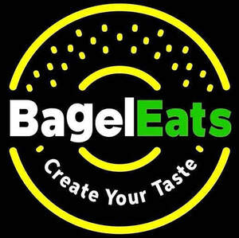

Trade Mark Journal No.2025/024 13 June 2025
UK00004210076 28 May 2025 (29,30,35,43)

- Class 29
- Waffle fries; Burgers; Chips [french fries]; Vegetable burgers; Turkey burgers; Chicken burgers; Coffee creamers; Veggie burger patties; Potato pancakes; Frozen french fries; Meat burgers; Potato fries; French fries; Milkshakes; Coffee creamer; Yogurt drinks; Tofu burger patties; Turkey burger patties; Omelettes; Omelets; Desserts of yogurt; Omlettes; Potato snacks; Tofu-based snack food.
- Class 30
- Cheeseburgers [sandwiches]; Hamburger sandwiches; Sandwiches; Bagels; Coffee drinks; Coffee; Toasted sandwiches; Doughnuts; Chocolate pastries; Chocolate waffles; Pastries; Coffee beverages; Chicken sandwiches; Chocolate coffee; Sopapillas [fried pastries]; Iced coffee; Toasted cheese sandwich; Waffles; Turkey sandwiches; Breakfast cake; Cappuccino; Coffee beverages with milk; Croissants; Pancakes; Danish pastries; Flapjacks [griddle cakes]; Coffee substitutes [artificial coffee or vegetable preparations for use as coffee]; Coffee beans; Pastries, cakes, tarts and biscuits (cookies); Fish sandwiches; Beverages made from coffee; Beverages made of coffee; Flavoured coffee; Savory pastries; Burgers contained in bread rolls; Savory pancakes; Roasted coffee beans; Pizza pies; Mixtures of malt coffee with coffee; Muesli desserts; Sopapillas [fried bread]; Frozen pastries; Ice cream sandwiches; Pizza; Sandwich wraps [bread]; Coffee essences for use as substitutes for coffee; Muffins; Prepared coffee beverages; Savoury pancakes; Pastries with fruit; Fruit pastries; Almond pastries; Viennese pastries; Tortilla snacks; Coffee based drinks; Bread buns; Bread and buns; Waffles with a chocolate coating; Bread biscuits; Frozen pancakes; Beverages with coffee base; Beverages with a coffee base; Coffee flavorings; Ice beverages with a coffee base; Prepared coffee and coffee-based beverages; Fresh pizza; Biscuits for cheese; Decaffeinated coffee; Cheese curls [snacks]; Pizza sauces; Freeze-dried coffee; Aerated drinks [with coffee, cocoa or chocolate base]; Frozen French toast; Pâté [pastries]; Coffee [roasted, powdered, granulated, or in drinks]; Prepared desserts [pastries]; Ice-cream cakes; Coffee extracts for use as substitutes for coffee; Cheese flavored puffed corn snacks; Coffee flavourings; Frozen waffles; Sandwiches containing salad.
- Class 35
- Retail services in relation to coffee.
- Class 43
- Serving food and drink in doughnut shops; Coffee shops; Providing food and drink in doughnut shops; Serving food and drink in Internet cafes.
BagelEats